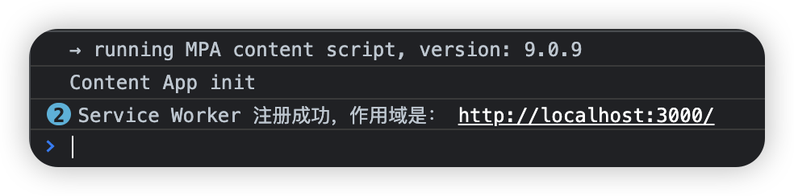
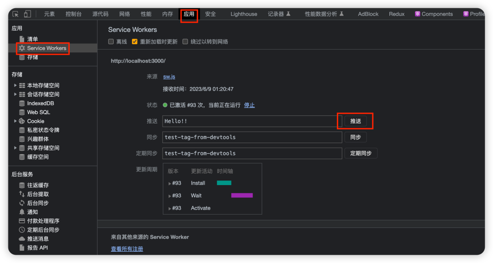

你有没有遇到过这样的场景：当你在浏览网页时，突然收到一个通知，告诉你有新的内容更新，或者有一条重要的消息通知你查看。
作为一枚前端开发，你可能会想，这不就是请求轮询吗？
没错，异步请求通过轮询的方式确实能实现类似的功能，但这不是我们今天要分享的主题 ~
是什么呢？
是 Service Worker！
是的，通过 Service Worker 来实现“推送通知”的功能。Service Worker 是 Web API 的一部分，其功能非常强大。相信通过今天的内容，你肯定会有所收获。
那么现在，就让我们正式开始吧~
简单来说，Service Worker 是一种在浏览器背后默默工作的 JS 脚本，它可以在用户没有打开网页的情况下运行，为网页提供了各种强大的功能，比如离线缓存、后台同步等，当然还有我们今天要分享的——推送通知。
有些网站的推送通知做的相当不错，比如油管（YouTube）。当你关注了油管上的某个 UP 主，当 TA 更新视频后浏览器就会给你推送消息，这时候就算你没有打开浏览器，你也会收到通知。Windows 10 系统上在桌面右下角会弹出一个来自浏览器的消息通知框，通知的内容来自油管那位 UP 主的更新信息；Mac 系统上，在桌面右上角会有一条来自浏览器的通知，通知的内容与 Windows 上的信息一致。
你可能会问，为什么我们要使用 Service Worker 来实现推送通知呢？
原因很简单，因为它可以帮助我们更好地与用户进行交互，能提高用户的参与度，甚至在一定程度上可以提高用户的留存率。设想一下，如果你的网站有新的内容更新，你可以立即通过推送通知告诉你的用户。
这样的话，你的用户就不会错过重要通知了，而通知的内容恰好又戳到了用户的 G 点，那 TA 肯定会点一下消息框，然后瞬间就回到你的网站了。相较于用户首先打开浏览器然后点击书签访问到你的网站来说，这种类似于系统级别的消息通知能极大提高用户粘性。
所以，要不要考虑把 Service Worker 在自己网站上用起来呢？
下面，我们就来一步步实现这个功能。
现在你已经对 Service Worker 有了一个基本的了解，接下来我们看一下它的基础知识。
首先你要明白 Service Worker 是如何实现推送通知的。其实它的工作原理也不复杂，当用户访问网页时，Service Worker 就会被安装到用户的设备上。当服务器有新的信息需要传递给用户时，服务器就会发送一个推送事件到 Service Worker。然后，Service Worker 就会接收这个事件推送，并根据这个事件显示给用户一个通知。
这就是 Service Worker 实现推送通知的基本原理，是不是挺简单的？
接下来让我们动手实践一下吧 ~
第一步，我们需要注册一个 Service Worker。你可能会问，“注册 Service Worker”是什么意思呢？
其实，这是要跟浏览器说：
“Hi，我要在我的网站上用 Service Worker 哦~”
要怎么注册 Service Worker 呢？很简单，只需要几行代码。首先，你需要检查一下浏览器是不是支持 Service Worker。检查方式也不难，通过浏览器的 navigator 对象上的 serviceWorker 属性来判断即可。如果 navigator.serviceWorker 存在，则表示浏览器支持 Service Worker。
具体代码如下：
if ("serviceWorker" in navigator) {
window.addEventListener("load", function () {
navigator.serviceWorker.register("/sw.js").then(
function (registration) {
console.log("Service Worker 注册成功，作用域是：", registration.scope);
},
function (err) {
console.log("Service Worker 注册失败，错误是：", err);
}
);
});
}
这段代码中有个地方需要注意，在 register 方法中需要提供 Service Worker 的脚本路径，这里放在了网站根目录。比如，你用的是 Next.js，那么 sw.js 文件就应该放在 public 目录下面。
navigator.serviceWorker.register 方法返回一个 Promise，这个 Promise 在 Service Worker 注册成功时会解析为一个 registration 对象，这个对象包含了关于 Service Worker 的一些信息，比如它的作用域。如果 Service Worker 注册失败，Promise 会被拒绝，并且错误信息会被捕获并打印出来。
我们看一下在浏览器中注册之后的效果：

是不是注册 Service Worker 很简单？
注册完，接下来就是订阅了。
什么是“订阅推送”呢？简单来说，订阅推送就是告诉服务器：
“Hey，有新的消息要告诉我哦~”
这样，当服务器有新的内容时，它就会把这些内容推送给你。
那么，我们如何使用 Service Worker 订阅推送呢？其实，这个过程也非常简单，几个步骤就能搞定。
首先要做的：获取用户许可。为什么要征得用户同意才行呢？因为推送通知是一种可以打扰到用户的行为，所以我们需要获取用户的许可才行。
至于请求用户许可的方法也很简单，用 Notification.requestPermission 方法来征得用户同意即可。调用这个方法后，浏览器会弹出一个对话框，询问用户是否允许接收通知。如果用户同意，这个方法就会返回一个解析为 'granted' 的 Promise。
然后，我们还需要生成一个订阅对象。可以通过 registration.pushManager.subscribe 方法来生成一个订阅对象。这个方法需要一个参数，这个参数是一个包含 userVisibleOnly 和 applicationServerKey 属性的对象。userVisibleOnly 属性表示每个推送消息都必须对用户可见，applicationServerKey 属性是服务器的公钥，用于加密推送消息。
最后，我们需要把这个订阅对象发送给服务器。可以使用 fetch 方法来发送一个 POST 请求到服务器，请求的主体就是我们的订阅对象。
参考代码如下：
Notification.requestPermission().then(function (permission) {
if (permission === "granted") {
navigator.serviceWorker.ready.then(function (registration) {
registration.pushManager
.subscribe({
userVisibleOnly: true,
// PUBLIC_KEY 是 VAPID 公钥，VAPID 公钥和秘钥是配对的，需要在你自己的服务器上生成 VAPID 公钥和私钥。
// 可以在 https://web-push-codelab.glitch.me/ 中生成用公钥和秘钥以做测试用。
applicationServerKey: urlBase64ToUint8Array("YOUR_PUBLIC_KEY"),
})
.then(function (subscription) {
fetch("/subscribe", {
method: "POST",
headers: {
"Content-Type": "application/json",
},
body: JSON.stringify(subscription),
});
});
});
}
});
在这段代码中，我们首先请求用户的许可。如果用户同意接收通知，我们就等待 Service Worker 准备好，然后生成一个订阅对象，并把这个订阅对象发送给服务器。
之后服务器可以返回一个消息告诉浏览器是否订阅成功，比如我们在 Next.js 中模拟一下：
// pages/api/subscribe.js
import type { NextApiRequest, NextApiResponse } from "next/types";
export default function handler(
req: NextApiRequest,
res: NextApiResponse<{ message: string }>
) {
if (req.method === "POST") {
// 在这里处理订阅对象
const subscription = req.body;
// 保存订阅对象到数据库或其他地方
// ...
res.status(200).json({ message: "订阅成功" });
} else {
res.status(405).json({ message: "只接受 POST 请求" });
}
}
服务器收到订阅对象后，返回了一个对象表示订阅成功。
 {
const title = "新消息：模拟服务端发送的消息！";
const options = {
body: event.data.text(),
};
event.waitUntil(self.registration.showNotification(title, options));
});
之后，你可以使用浏览器的开发者工具来模拟推送事件。在浏览器的开发者工具中，你可以选择“应用”选项卡下的 “Service Worker”菜单，然后点击 "推送" 按钮来模拟一个推送事件。

 {
event.notification.close(); // 关闭通知
event.waitUntil(
clients.openWindow("https://www.yourwebsite.com") // 打开你的网站
);
});
这段代码会在用户点击通知时关闭通知，并打开你的网站。
是不是很简单？这里就不放截屏了。
至此，Service Worker 推送通知就已经实现了。不过这一功能需要后端支持，如果你对后端开发有一些经验，那就再好不过了。
但是，还有一些需要注意的事项。
首先，你的网站必须是通过 HTTPS 访问的，因为 Service Worker 只能在 HTTPS 网站上生效。这主要是基于安全的考虑。
再就是 Service Worker 有它自己的生命周期，它会在安装、激活和终止等阶段执行不同的任务。所以，你要理解、掌握它的生命周期。鉴于篇幅原因，这部分内容没有涉及。不过不要担心，这部分内容会后面和大家分享。
最后一点就是用户体验的问题了。虽然其推送通知的能力非常强，但是如果频繁给用户推送消息，用户得烦死了~ 所以，你要尽可能保证你推送的通知是有价值的，且不能过于频繁。还有一点，你应该、也必须提供一个简单的方式让用户能取消订阅。这部分内容我们也会在后面和大家分享，你可以先自己了解一下这方面的知识。